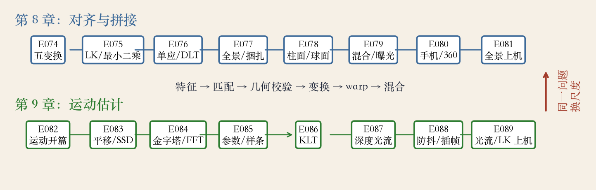
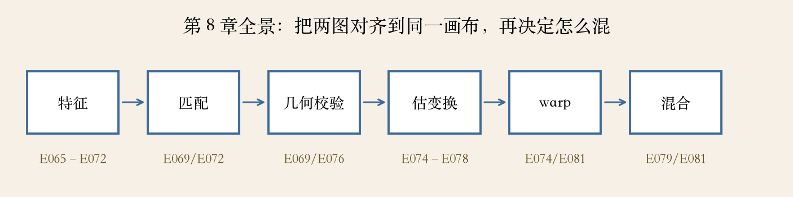
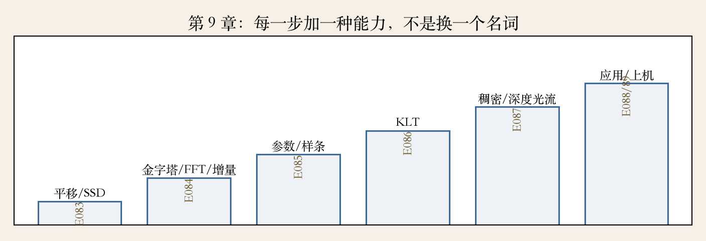

第 8–9 章复盘 · 开场
十六集，同一件事
- 第 8 章对齐图像与特征。
- 第 9 章估计像素运动。
- 两章都在回答：谁和谁对上。
- 本集把两条线并成一张总表。
依据：本集复盘（E074–E089 回链）
两条线
第 8 章：图对图、图对场景
第 9 章：像素对像素
共同问题：同名点怎么找
第 8 章 · 章头与导言
图像对齐与拼接
- 第 8 章叫图像对齐与拼接。
- 先找特征，再做几何配准。
- 几何配准就是估计图像间变换。
- 变换估错，拼接和混合都救不回。
依据：原书第 501/503 页
书上两处
图像对齐与拼接
几何配准：估 2D/3D 变换
基于特征的对齐
第 8 章 · E074–E078
变换模型从简到繁
- 变换阶梯：平移、相似、仿射、单应。
- 再往后是柱面与球面投影。
- E074–E078 依次讲这五站。
- 模型越自由，越容易过拟合。
依据：第 8 章回链（E074–E078）
按场景选模型
平面场景常用单应
相机转动用柱面
非平面多图用捆扎
第 8 章 · E079–E081
全景：对齐加混合
- E079 讲曝光补偿与多频段混合。
- E080 讲手机与 360 全景应用。
- E081 上机走柱面、粗对齐、曝光、混合。
- 先补偿曝光再混合，接缝才不亮。
依据：第 8 章回链（E079–E081）
两步分工
对齐决定图摆在哪
混合决定接缝明不明显
曝光不一致先补偿
程序生成图 · 十六站
十六站总表
- 上排是第 8 章八站。
- 下排是第 9 章八站。
- 中间一行是全景流水线。
- 箭头只表示顺序，不代表唯一依赖。
依据：本集实验

第 8–9 章十六站总表：上排图像对齐，下排运动估计｜程序生成，未用教材或论文原图
第 9 章 · 导言
先定误差度量
- 第 557 页说，对齐和运动估计最常用。
- 要估运动，先选误差度量。
- 误差度量决定外点长什么样。
- 也决定鲁棒损失怎么选。
依据：原书第 557 页
先问三件事
怎么衡量两张图不像
怎么找得更快
怎么做得更细
第 9 章 · E083
误差度量怎么选
- E083 讲平移对齐。
- 工具：SSD、SAD、NCC、鲁棒损失。
- NCC 对亮度变化更稳。
- SSD 更适合高斯噪声。
依据：原书第 558–562 页
两个细节
偏置与增益：处理亮度差
重叠归一化：避免假象
误差选错，搜索再快也没用
第 9 章 · E084
三条加速路线
- E084 讲三条加速路线。
- 金字塔由粗到细，省搜索次数。
- FFT 与相位相关省卷积。
- 泰勒展开做增量细化。
依据：原书第 562–570 页
各管一段
金字塔：先粗后细
FFT：频域找位移
增量法：补亚像素精度
层数按最大位移选
第 9 章 · E085
参数模型与样条
- E085 把平移推广到参数模型。
- 模型：相似、仿射、单应。
- 还讲雅可比链、Hessian、分块近似。
- 样条控制网格用于非刚体。
依据：原书第 570–578 页
代价与边界
参数少，抗噪更稳
非刚体与多运动不够用
医学配准常用互信息
第 9 章 · E086
KLT 只跟特征点
- E086 讲 KLT 跟踪。
- 好特征、低 SSD、亮度补偿。
- 金字塔处理大位移。
- 固定模板与重采样两种做法。
依据：原书第 452–455 页
KLT 的边界
不估全图，只跟特征点
角点两个方向都有梯度
跟丢了要重新检测
第 9 章 · E087
深度光流学匹配
- E087 讲深度学习光流。
- 谱系：DeepFlow、FlowNet、SPyNet。
- 之后有 PWC-Net、IRR、RAFT。
- 从手工代价体走到全相关体加迭代。
依据：原书第 584–586 页
网络学了什么
匹配、正则、细化
相关体记谁和谁像
迭代记上次错在哪
第 9 章 · E088
防抖和插帧在改什么
- E088 把光流用到产品。
- 防抖分三阶段。
- 帧插值与慢动作。
- 边界裁剪、遮挡与可见性都要处理。
依据：原书第 573–575、593–594 页
三件事
防抖：估计、平滑、补偿
插帧：运动、遮挡、混合
慢动作是时间上的插帧
第 9 章 · E089
上机：把公式变成数字
- E089 是上机课。
- 颜色轮、箭头图、误差图。
- 手写 2×2 的 LK。
- 孔径、平坦区、大位移用五层金字塔。
依据：第 9 章回链（E089）
上机看什么
每个数字为什么是这样
矩阵条件数决定可信度
先看特征值再决定信不信
程序生成图 · 全景流水线
全景流水线六步
- 全景要过六道工序。
- 特征、匹配、几何校验。
- 估变换、warp、混合。
- 每一步都有对应的集。
依据：本集实验

第 8 章全景六步：特征、匹配、几何校验、估变换、warp、混合｜程序生成，未用教材或论文原图
程序生成图 · 运动台阶
运动估计六级台阶
- 第一级是平移与 SSD。
- 第二级是金字塔、FFT、增量。
- 再往上是参数、KLT、深度光流。
- 最后是应用与上机。
依据：本集实验

第 9 章运动六级台阶：平移、金字塔、参数、KLT、深度光流、应用与上机｜程序生成，未用教材或论文原图
收束 · 下一章
两条线合起来看
- 第 8 章把图摆到一起。
- 第 9 章把位移估到像素。
- 两条线共用特征、匹配、校验。
- 下一章计算摄影接上这些工具。
依据：第 8–9 章复盘
下一章
曝光、拼接、去噪、重对焦
还是同一套对齐与运动
下一集见